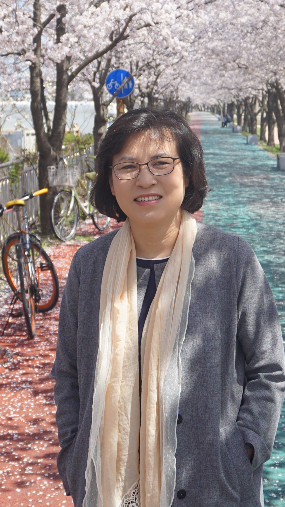
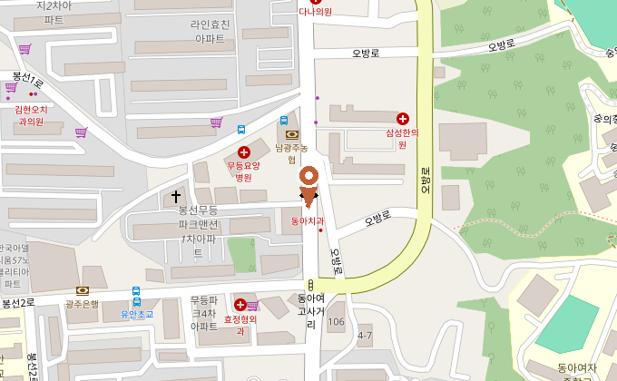

요한복음 2장 5절–11절
말씀에 순종하고 사랑으로 서로 세우며 세상속에서 복음을 살아내는 교회입니다.


삶의 자리에서 다시 만나는 하나님의 말씀
긴 설교에서 핵심 장면만 세로 영상으로 잘라낸 것 — 실채널에서 클릭 한 번으로 바로 재생됩니다.
브라우저를 열지 않아도, 아이콘 한 번이면 바로 이 화면이 열립니다. 매일 아침 말씀을 놓치지 않도록 홈 화면에 추가해 두세요.
아이폰: 공유 버튼 → 홈 화면에 추가 · 안드로이드: 메뉴 → 앱 설치